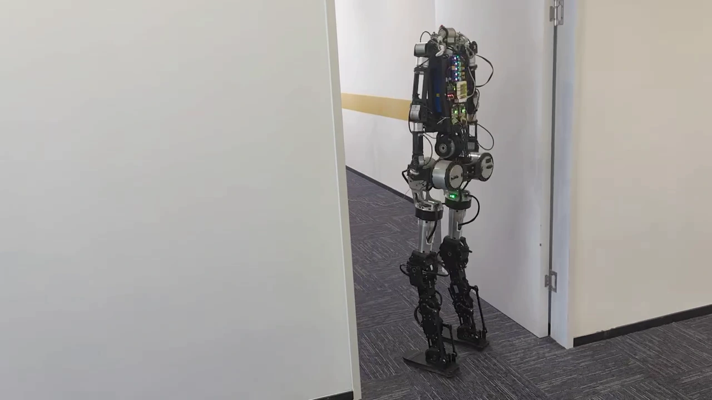

MotionVL: Vision-Language Supervision for Reinforcement Learning of Humanoid Motion
IEEE Robotics and Automation Letters · 11(5), 5717–5724 · 2026 · IROS 2026 oral presentation
MotionVL uses descriptions of simulated motion to generate reward functions. We evaluated jumping, running, and single-leg balance in simulation and demonstrated straight-leg walking on hardware.